辛苦一年的春节假期一定要好好享受，
大家也肯定都在准备回家的行李，
想要过个时髦年，
一定要记得带上这条格纹裤哦～
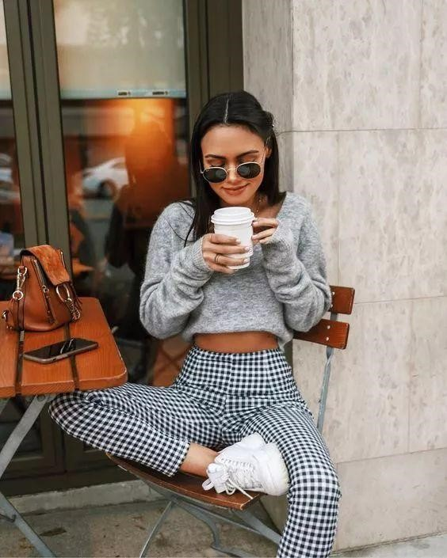
格纹裤也是被一众女明星带火的单品，
休闲范、复古风、减龄搭，
全都要靠它。
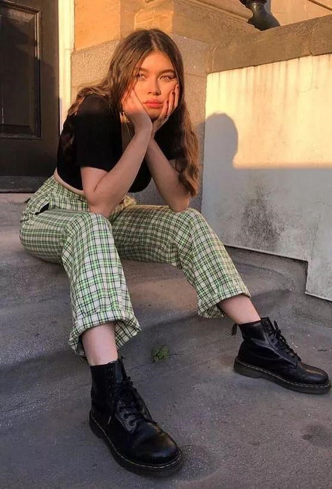
推荐几种不同风格的格纹裤给大家
1、阔腿格纹裤
阔腿裤风潮已经火了很久了，
阔腿的格纹裤却有着不一样的调调，
亮眼的格纹元素，
绝对的复古look
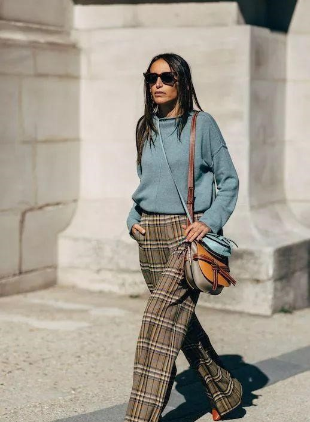
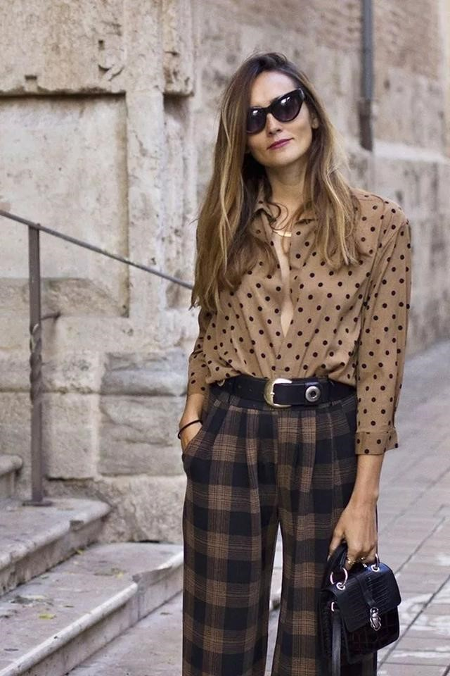
撞色的正方格阔腿裤，
可以凸显你个性的时尚态度，
搭配同色系的包包或者配饰，
也非常时髦。
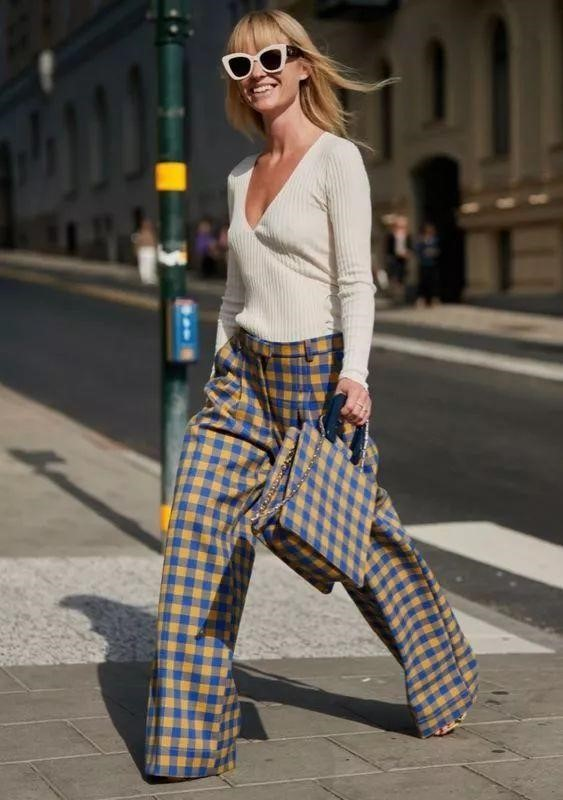
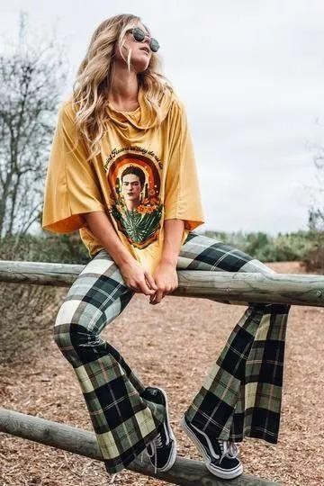
2、英伦格纹裤
说到格纹，
不能不提的就是英伦风，
英伦格纹作为时尚元素，
已经流行了近百年，
无论什么时候你都会被英伦格纹吸引
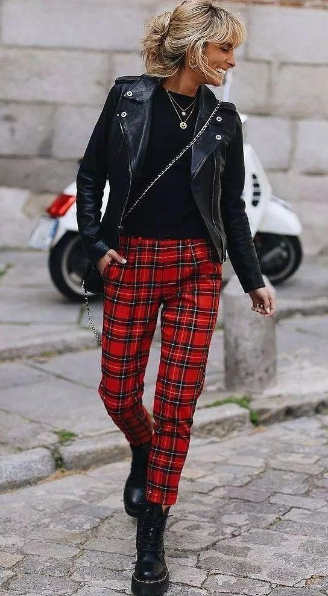
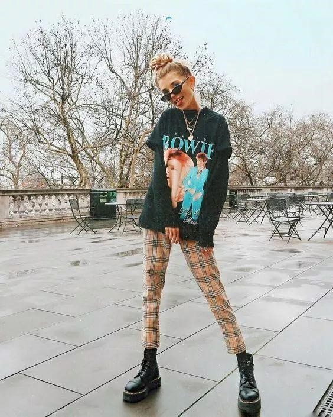
“苏格兰格纹，等于一部大英帝国的历史”
苏格兰格纹是英伦传统和文化的一部分，
也是至今依然被应用的最广泛的格纹元素之一。
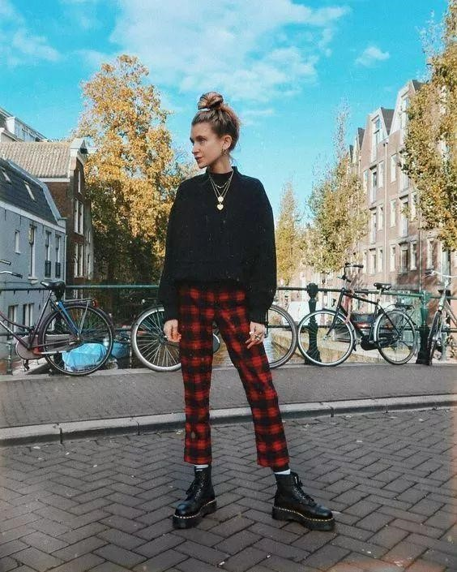
3、工装格纹裤
舒适又实用的工装裤又回来啦～
工装风回潮，
穿上格纹工装裤，
变身帅气的工装女孩。
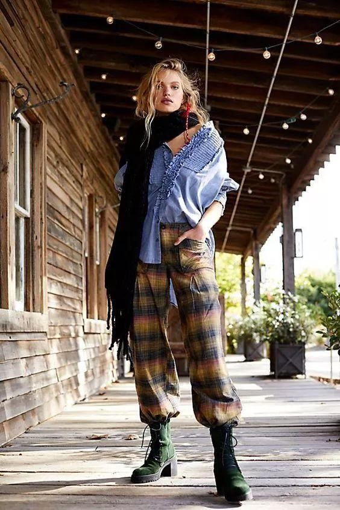
工装裤是街头酷girl的大爱单品。
搭配卫衣或者T恤，
一身帅气有型的look完成！
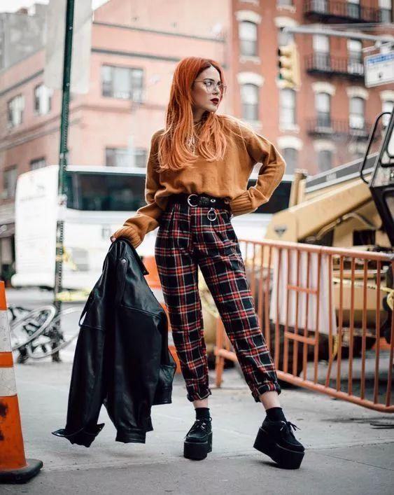
工装格纹裤和马丁靴是天生一对
也是绝对不会出错的搭配。
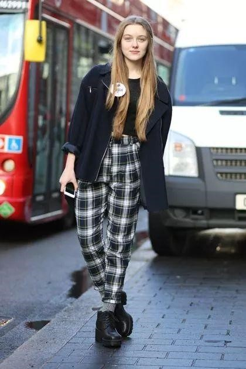
如果你想走性感风，
也可以搭配一双小高跟。

4、正装范儿格纹裤
如果需要参加稍微正式的聚会，
格纹裤也可以帮你完成时髦look。
西装版型的灰色格纹裤，
参加同学聚会，
你就可以穿起来了。
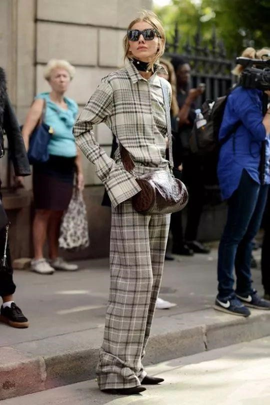
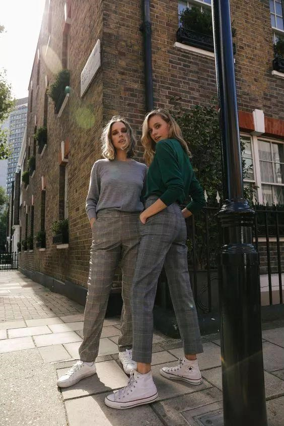
灰色西装版型的格纹裤
搭配大衣和皮衣，
也是气场满满。
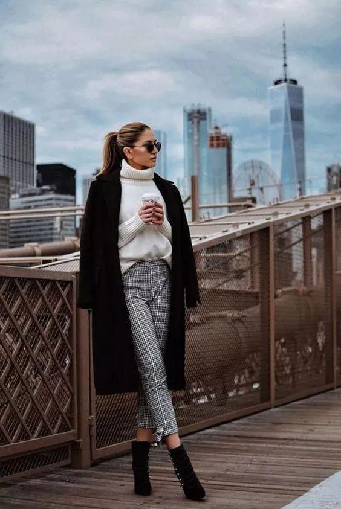
格纹裤搭配西装外套，
亲戚们都想follow你的穿搭啦～
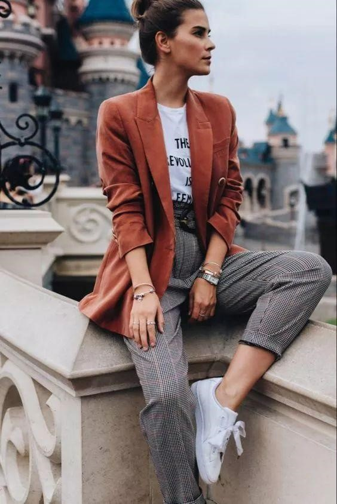
整套的格纹搭配也可以尝试，
但是一定要选好款式哦～
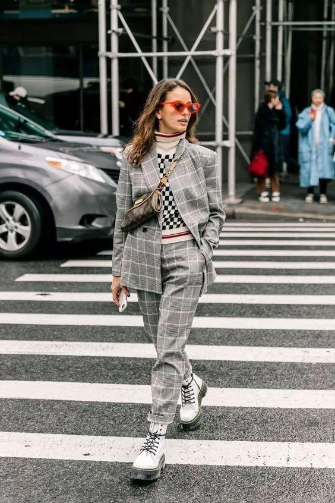